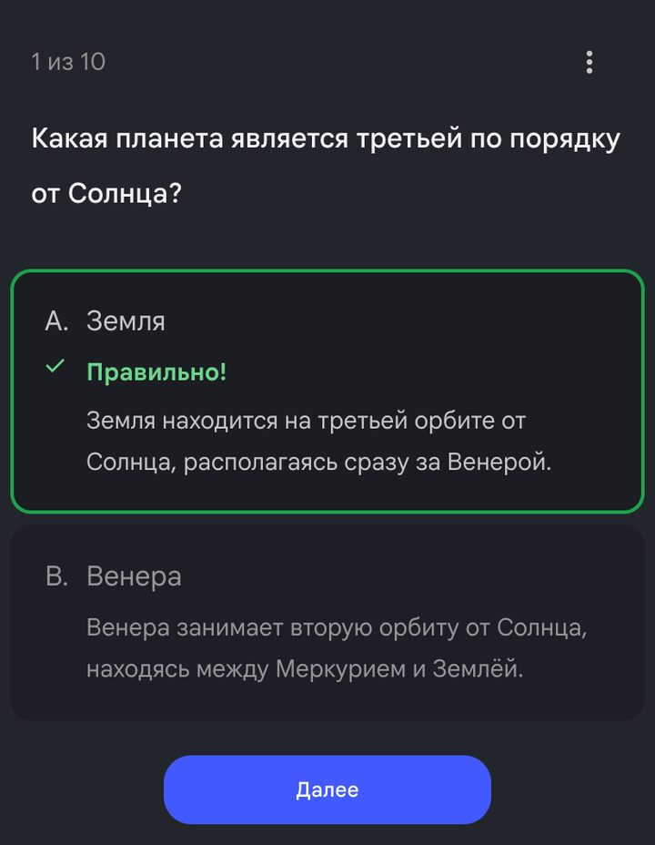
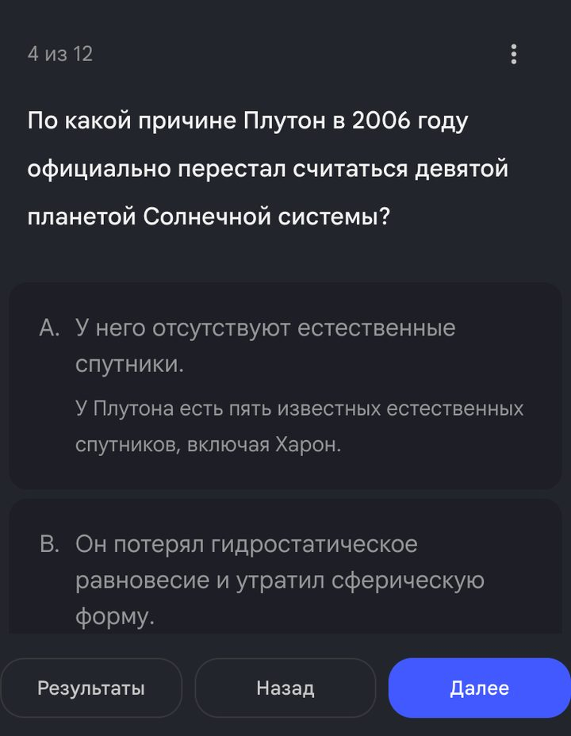

Gemini Notebook — новое название NotebookLM. Вход через Google.
Открой Gemini Notebook. Старые ссылки NotebookLM перенаправляются автоматически.
Войди в подходящий Google-аккаунт. Для рабочего или учебного доступ может включать администратор.
Создай новый блокнот и назови его по теме. Добавь материал кнопкой «Добавить источники» (в английском интерфейсе — Add sources).
Начни с веб-версии: в мобильном приложении часть возможностей может отличаться. Открой загруженный источник и убедись, что текст читается.
Блокнот работает с выбранными материалами. Подписка на наше обучение не добавляет лимиты Google. Название и логотип обновлялись после объявления 16 июля 2026.
Подойдёт почта, к которой у тебя постоянный доступ. Gmail с адресом @gmail.com — один из вариантов; универсального требования именно к окончанию «.com» у этих инструментов нет.
Если почта уже есть, сначала попробуй её или вход через свой Google/Apple-аккаунт.
Для нового Google-аккаунта открой форму регистрации Google. Выбери личный аккаунт, заполни имя и данные, предложенные формой, выбери адрес и пароль.
На телефоне можно открыть Gmail → значок профиля → добавить аккаунт → Google → создать аккаунт. Если регистрация в браузере не получается, это альтернативный путь, а не гарантия отсутствия проверок.
Пройди проверки, которые запросит Google. Добавь способ восстановления и сохрани данные входа у себя. Google также позволяет использовать существующую почту другого сервиса.
Проверь написание адреса, папку спама и последнее письмо с кодом.
Используй тот же способ входа, что при регистрации. Вход через Google и вход по другой почте могут вести в разные аккаунты.
Попробуй другой браузер или устройство. Не повторяй запросы кода непрерывно: дождись срока на экране.
Если сервис сообщает о неподдерживаемой стране или типе аккаунта, смена почты доступ не вернёт. Проверь официальные условия по ссылке выше.
Gemini Notebook — бывший NotebookLM — делает тест по твоему материалу: статье, конспекту, PDF или фото страниц учебника. Вопросы с вариантами, подсказкой и пояснением к каждому ответу — примерно за минуту. Удобно перед контрольной, себе или ребёнку. Ошибок в ответах мы не нашли. Подвох в другом: тест легко получается не для того возраста и не про то. Это и учимся проверять.

Вопрос из теста, который Gemini Notebook сделал по запросу из урока. Пояснение есть и у неверных вариантов.
Шаг 1. Добавь материал
Открой notebook.google.com, войди в Google-аккаунт и создай блокнот
«Добавить источники» → «Сайты» → вставь ссылку на статью. Мы взяли статью «Солнечная система» из Википедии
Свой материал — кнопкой «Загрузить файлы»: окно принимает PDF, документы и изображения, то есть и фото страниц учебника
Шаг 2. Настрой тест
Открой вкладку Studio и нажми «Тест». Откроется окно настроек — не жми сразу «Сгенерировать». Без настроек тест тоже получится, только не для пятого класса.
Что выбрать в окне
Сложность«Простой»
Типы вопросовЕсли ребёнка путают вопросы с несколькими ответами, оставь «Один ответ из нескольких»
ЯзыкРусский
Шаг 3. Впиши тему и запусти
Запрос
Для ученика 10–11 лет, к контрольной. Только 8 планет: их порядок от Солнца и известные спутники. Карликовые планеты не нужны. Простые слова, без научных терминов.
У нас тест был готов примерно через минуту
Он появится в списке Studio — открой его и пройди сам, прежде чем давать ребёнку
Что пришло у нас
Сначала мы написали коротко: «для школьника 5 класса: планеты, порядок, спутники» — и оставили средний уровень. Все 12 ответов верные, но тест вышел для старшеклассника. Четыре вопроса из двенадцати — про карликовые планеты и Плутон, хотя просили планеты и спутники. И слова: «гидростатическое равновесие», «а. е.», «химический состав».

Тест по короткой теме: про Плутон и «гидростатическое равновесие». Для пятого класса мимо.
С запросом из урока и уровнем «Простой» вышло 10 вопросов. Ответы верные, слова простые, карликовых планет нет. Но и тут не всё по теме: кроме порядка планет и спутников, тест спросил про кольца, вращение и «ледяных гигантов». Просьбу «без научных терминов» он выполнил не до конца.
Шаг 4. Проверь тест за 3 минуты
В двух тестах мы сверили все 22 ответа — ошибок нет. Поэтому смотрим не только на ответы, а на то, ради чего тест делали:
Пройди тест сам
ОтветыВерный ли ответ отмечен правильным
ТемаВсе ли вопросы про то, что будет на контрольной
СловаНет ли слов, которых ребёнок не знает
ПоясненияПонятно ли, почему ответ верный
У каждого вопроса есть меню «⋮» — там «Изменить вопрос» и «Удалить вопрос»: лишний вопрос можно убрать, не делая тест заново. А после теста есть кнопка «Пройти тест заново» → «Повторно ответить на незачтённые вопросы» — ребёнок повторит только те, где ошибся.
Если что-то не так
Слишком сложно
Поставь «Простой» и допиши в тему возраст и «Простые слова, без научных терминов»
Вопросы не по теме
Перечисли в теме по пунктам, что будет на контрольной, и чего не нужно: «Карликовые планеты не нужны»
Ребёнка путают вопросы с несколькими ответами
В «Типах вопросов» оставь только «Один ответ из нескольких»
Мало вопросов
«Количество вопросов» → «Больше» или напиши число в теме: окно подсказывает, что можно до 50
Своя тема
Возьми тему ближайшей контрольной. Пункты перепиши из учебника или из того, что задали в школе.
Запрос
Для ученика [возраст], к контрольной по теме «[тема]». Только: [2–3 пункта из учебника]. [Чего не нужно]. Простые слова, без научных терминов.
Итоги
Делаешь тест по своему материалу в Gemini Notebook
Задаёшь уровень и тему до того, как нажать «Сгенерировать»
Проверяешь не только ответы, но и тему и слова
Даёшь повторить только те вопросы, где ошибся
Теперь твоя очередь
Сделай тест к ближайшей контрольной: добавь параграф учебника или статью, задай уровень и тему. Пройди тест сам, прежде чем давать ребёнку.
Источник — материал контрольной
Уровень и тема заданы до генерации
Все вопросы по теме
Нет слов, которых ребёнок не знает
Урок рассчитан на сайт notebook.google.com; кнопки у нас были на русском. Названия могут отличаться в приложении и после обновлений. Подписка на наше обучение не включает платные тарифы нейросетей.